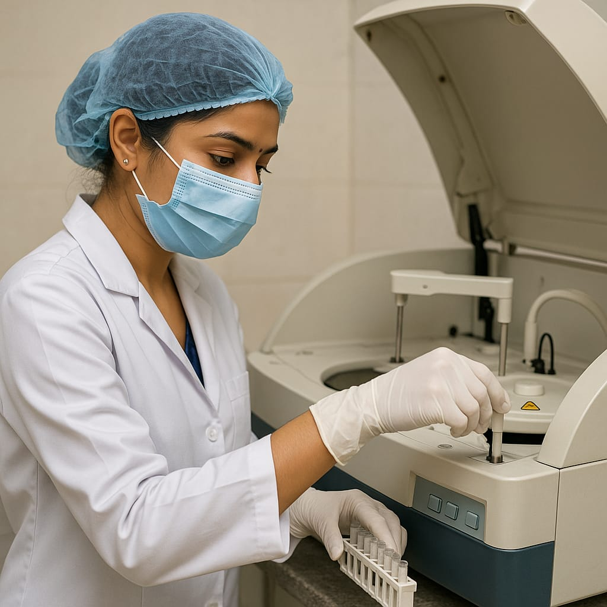
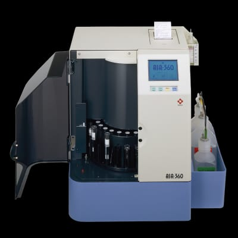
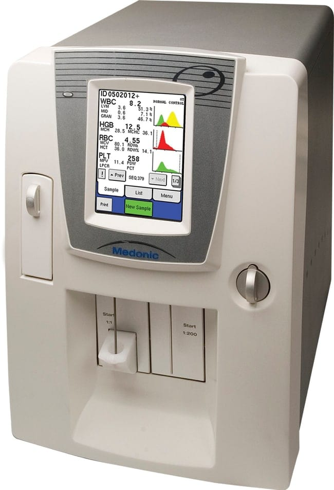
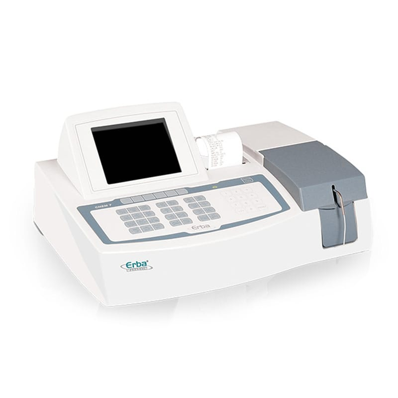
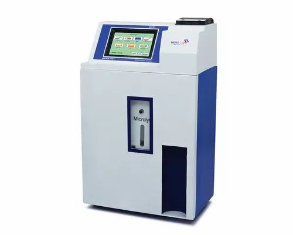

Blood Tests
Complete blood counts, lipid profile, liver and kidney panels, and more.
Hi-Tech Pathology Lab is a diagnostic centre on Hospital Road in Janakpurdham, Dhanusha. Book blood tests, health checkups, or home sample collection in Janakpur.

Complete blood counts, lipid profile, liver and kidney panels, and more.
Routine analysis, microscopy, and cultures.
RT-PCR and rapid antigen testing with certified reporting.
Contact our team to book individual tests or ask which health checkup package is right for you.
Blood sugar testing, including HbA1c.
Liver function testing, including SGPT.
Kidney function testing, including creatinine.
Vitamin D, Vitamin B12, cholesterol, and lipid profile testing.
Ask our lab about Beta hCG testing in Janakpurdham.
Ask about tests such as PSA and CA-125.
Call to arrange home sample collection in Janakpur and ask about online blood test report access in Nepal.
Explore basic, advanced, ANC, cancer screening, and full body checkup packages.
We use advanced, world-class diagnostic machines to ensure accurate and reliable test results.

For thyroid and immunoassay tests, we use Tosoh AiA 360, a world-class Japanese analyzer.

For CBC tests, we use Medonic M Series, a world-class Sweden-made analyzer.

Liver, kidney, and lipid profile tests are performed using Erba Chem 7 & Erba Chem 6, Germany-manufactured analyzers.

Cancer and tumor marker tests are conducted using Tosoh AiA 360 Immunoassay Analyzer.

For electrolyte imbalance testing, we use a Micro Lab Electrolyte Analyzer, a world-class Indian-manufactured system.